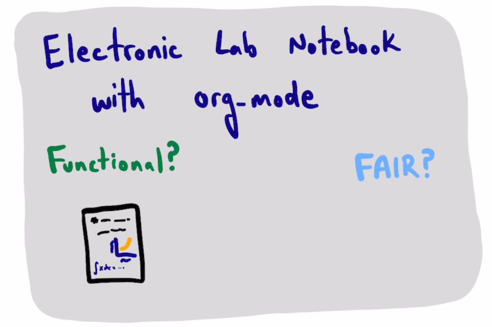
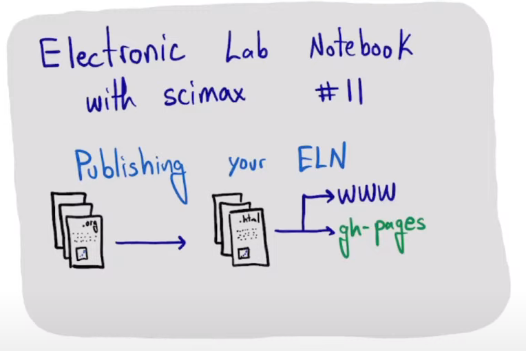

Scimax electronic laboratory notebook
Table of Contents

I plan to use this repo to explore using scimax as an electronic laboratory notebook. I will use the examples to determine the extent to which it provides FAIR 1 (Findable, Accessible, Interoperable, Reusable) data, and how to balance that with usability.
Repo: https://github.com/jkitchin/scimax-eln
- Video 1 - https://www.youtube.com/watch?v=KodhYAo4xn0&t=0s
- Video 2 - joblib https://www.youtube.com/watch?v=sHiMOQkNFKQ
- Video 3 - hashcache https://youtube.com/live/d3zcfdylKOc
- Video 4 - SqlCache https://youtube.com/live/aWnYGOWWIqY
- Video 5 - molecular simulation https://youtube.com/live/eQcTubl-7kw
- Video 6 - writing reports in the notebook https://youtube.com/live/c9saatJ2o7A
- Video 7 - Interoperability and extendability https://youtube.com/live/RumU94MxqN4
- Video 8 - Searching your notebook https://youtube.com/live/C02FFd520MI
- Video 9 - Running Arduino devices https://youtube.com/live/Fn7sq8uRsGQ
- Video 10 - Electronic lab notebook with scimax - ELNs in the literature https://youtube.com/live/icPlZCF6LEw
- Video 11 - Publishing your ELN to GitHUB Pages https://youtube.com/live/zIgSOiMFBWU
- Video 12 - Tracking reagents in an ELN with scimax, completion and QR codes https://youtube.com/live/bLyhOCXn-Hg
- Video 13 - Controlling a remote instrument from an ELN - the SDL-light https://youtube.com/live/qbqxSKJ1F60
- Video 14 - SDL-Light with a design of experiment approach https://youtube.com/live/g1DEVScu6NE
1. pycse
Python computations in science and engineering. ./pycse/readme.html
2. Molecular simulation
3. Circuit Playground
Talk about interoperability with software, instruments
4. Arduino temperature
- show video capability with search of audio
- try image text recognition from a written note in image
- show scimax-ob-arduino
- work out how to capture data from it
5. QR codes, reagents, and tracking samples
6. TODO Temperature control lab
https://apmonitor.com/pdc/index.php/Main/PurchaseLabKit
See ./tclab/ and ./tclab_jupyter/
Notes for setup:
7. SDL-light - running a remote instrument
A DOE approach: ./sdl-light/doe.html
7.1. TODO get SDL-Light instruments
8. Manually publishing your ELN to GitHUB Pages

The notebook as I use it daily is local on my computer. I do commit and push changes to GitHUB, and GitHUB does an ok job rendering org-files, but we can take it one step further. You can set up a workflow to publish your notebook as html (or pdf, or other format if you want). We will publish this notebook to html, and then push it to GitHub which will serve the html via GitHUB Pages.
I am going to keep this simple and use the main branch and put the html in a folder called docs.
8.1. Setup Pages on GitHUB
Then we have to visit GitHUB (https://github.com/jkitchin/scimax-eln/settings/pages) and choose the main branch and /docs folder.
8.2. make an index.org page
We need an index.html page for GH pages. I use this to redirect to the readme file.
8.3. Org-publish
We need a small elisp script to setup and publish it.
(require 'ox-publish)
(let* ((base-directory "/Users/jkitchin/Dropbox/emacs/projects/scimax-eln/")
(org-export-with-broken-links t)
(org-publish-project-alist `(("html"
:base-directory ,base-directory
:base-extension "org"
:publishing-directory ,(concat base-directory "docs")
:exclude "docs"
:recursive t
:publishing-function org-html-publish-to-html
:auto-preamble t
:auto-sitemap t)
("pdf"
:base-directory ,base-directory
:base-extension "org"
:publishing-directory ,(concat base-directory "docs/pdfs")
:exclude "docs"
:recursive t
:publishing-function org-latex-publish-to-pdf
:auto-preamble t
:auto-sitemap t)
("static-html"
:base-directory ,base-directory
:base-extension "css\\|js\\|png\\|jpg\\|gif\\|pdf\\|dat\\|mov\\|txt\\|svg\\|aiff"
:publishing-directory ,(concat base-directory "docs")
:exclude "docs"
:recursive t
:publishing-function org-publish-attachment)
;; ... all the components ...
("scimax-eln" :components ("html" "static-html" "pdf")))))
(org-publish "scimax-eln" t))
We can check out the local version.
(browse-url "docs/index.html")
8.4. Commit and publish the html pages
To publish these we go into the html directory, commit all the files and push them to GitHUB.
git add docs git commit docs -m "publish" git push
After a bit you can find it at https://kitchingroup.cheme.cmu.edu/scimax-eln
8.5. Automatic publishing via GitHUB actions
I added this after I made the video. You need a publish script (see ./publish.el). Then you set up GitHUB actions (see ./.github/workflows/publish.yml). This installs an Emacs, runs a publish script, and publishes the results from the docs directory. Unfortunately, this only works for another branch, so I created a new gh-pages branch, and set up the actions to publish there.
Trying this was a minor disaster. I accidentally seem to have overwritten/deleted the org-files on GitHUB, and then pulled that locally. I was able to do some git-fu to revert changes and reconstruct the files (I also could have relied on Dropbox to rewind). This almost certainly resulted in some loss of work. I am noting it here to remind anyone reading this to have a backup strategy. There are a lot of moving parts that can lead to loss of data in unintended ways. I don't think I lost much data here, but it was a little stressful trying to figure out how to revert the changes, and to see if the content I wanted here was back the way I anticipated.